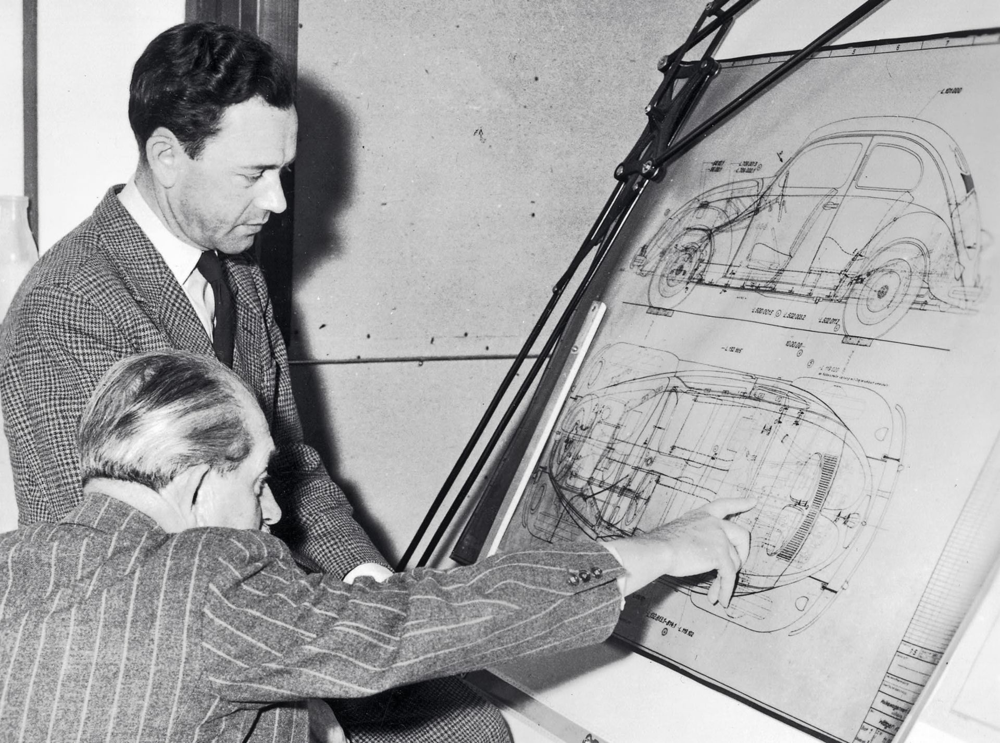
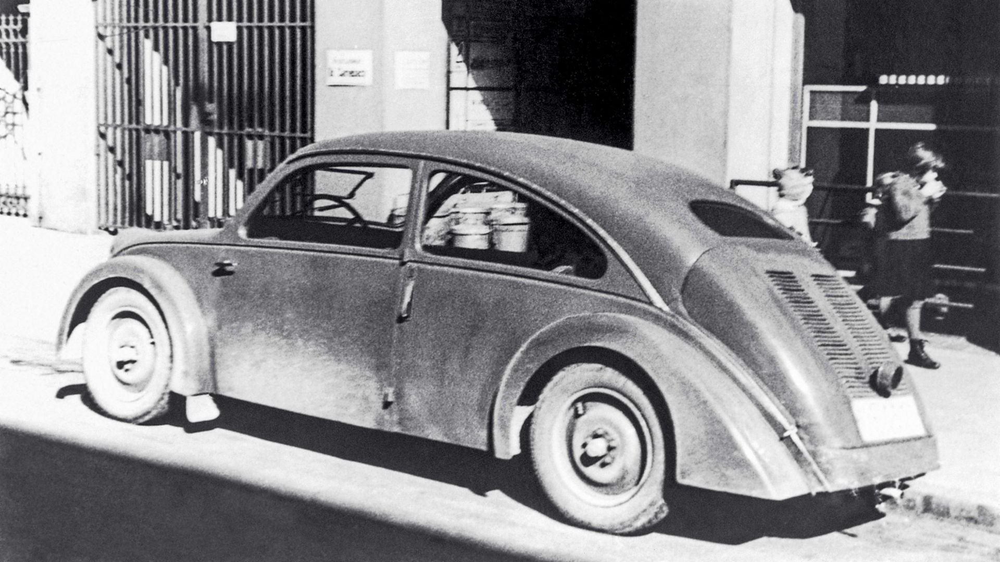

La innovación es una de las grandes señas de identidad de Porsche desde su fundación en 1931. En sus primeros años, Ferdinand Porsche y su equipo llevaron a cabo por encargo de varios clientes una serie de proyectos revolucionarios que cambiarían el curso de la historia. Porsche Engineering da continuidad hoy a esta tradición, con el mismo éxito.
En la década de 1930 era necesario tener mucho valor y gran determinación para montar un negocio. Ferdinand Porsche demostró que no le faltaba ni lo uno ni lo otro cuando, en plena Gran Depresión, decidió poner en marcha una oficina de ingeniería y diseño en Stuttgart. El 25 de abril de 1931 la inscribió en el registro mercantil de la ciudad con el nombre Sociedad de Responsabilidad Limitada Dr. Ing. h.c. F. Porsche, Diseño y Asesoramiento para Motores y Vehículos, situada en la calle Kronenstrasse, número 24. Esta empresa fue la precursora de la actual Porsche AG y dio origen a la actividad de desarrollo para clientes de Porsche.

Antes de establecerse en Stuttgart a los 55 años con su propia compañía, Ferdinand Porsche había sido, durante casi un cuarto de siglo, el responsable de desarrollo de modelos pioneros para los principales fabricantes de automóviles; entre ellos, Daimler-Motoren-Gesellschaft (Daimler-Benz AG desde 1926). Tras un breve paso por la localidad austriaca de Steyr, regresó a la metrópoli automovilística suaba, donde en 1931 supo rodearse de técnicos e ingenieros de probada solvencia, casi todos antiguos compañeros que decidieron seguir sus pasos. Eran los mejores de la época. Uno de ellos, el ingeniero Karl Rabe, se convertiría en la mano derecha de Porsche y en el Jefe de Diseño de la empresa. También estaban el experto en transmisiones Karl Fröhlich y el especialista en motores Josef Kales, a los que más adelante se sumarían el desarrollador de carrocerías Erwin Komenda y el experto en motores Franz Xaver Reimspiess. El hijo de Porsche, ‘Ferry’, formaba parte de aquel selecto grupo. Desde niño había admirado la energía creativa de su progenitor. “Siempre iba en busca de nuevos horizontes” diría Ferry años más tarde “y creaba automóviles adelantados a su tiempo”
Ferdinand Porsche gozó de un gran reconocimiento desde la fundación de la empresa, pero con el mundo sumido en una devastadora crisis económica también tuvo que luchar por conseguir trabajo. A menudo, el salario de los 19 trabajadores de la plantilla inicial consistía únicamente en alojamiento y comida. Uno de los primeros encargos lo haría Wanderer, un fabricante de Chemnitz (Alemania), en 1931. El equipo de Porsche desarrolló para la empresa sajona un motor de ocho cilindros en línea y una berlina de tamaño medio que alcanzó la fabricación en serie con el nombre de Wanderer W21/22. Después, llegarían encargos de otros fabricantes para el desarrollo de elementos de chasís y dirección. La amplia cobertura tecnológica que ofrecía el gran equipo técnico de Porsche, siempre motivado por las ideas del fundador, se reveló como una gran ventaja. “Ferdinand Porsche no era un hombre de libros,” –escribiría el historiador Wolfram Pyta– “él era un técnico impulsado por sus propias inquietudes en constante búsqueda de la solución técnicamente óptima”.

El gran punto de inflexión llegaría en 1933 de la mano de Auto Union, una empresa creada un año antes en el estado alemán de Sajonia que encargó el diseño de un auto de carreras completamente nuevo. En realidad, llevaban años dándole vueltas a algo así. Era el proyecto más ambicioso que podía proponerse en aquel momento a un diseñador técnico de vehículos. En el nuevo reglamento para autos de Gran Premio, el peso en vacío de los vehículos estaba limitado a 750 kilogramos, pero por lo demás apenas había restricciones técnicas. El diseño, denominado inicialmente P-Rennwagen (la P era por Porsche), resultó ser una auténtica genialidad. Gracias a la instalación del motor de 16 cilindros directamente detrás del conductor, el legendario ‘Flecha de Plata’ de Auto Union tenía una distribución óptima del peso. Aún hoy este diseño sigue triunfando en las carreras. El historiador Pyta asegura que la competición “sentó las bases para el rápido crecimiento” de la empresa. “Nunca se podrá destacar suficientemente” la importancia que este encargo tuvo para la compañía. Las carreras han formado parte de la esencia de la marca hasta hoy.
Hubo otros proyectos impulsados por este visionario diseñador que también fueron clave. A finales de 1932, el fabricante de motocicletas Zündapp encargó a la oficina el desarrollo de un auto de pequeño tamaño denominado Typ 12. Gracias a él, Porsche pudo trabajar en profundidad un tema al que llevaba años dando vueltas. Desde hacía más de una década había estado soñando con un modelo pequeño y ligero que fuera asequible para el gran público. Quería que fuera espacioso, cómodo y que tuviera una buena motorización. Con su propulsor trasero y su carrocería aerodinámica, el Porsche Typ 12 diseñado para Zündapp parece hoy un antepasado de aquel Volkswagen que más adelante pasaría a la historia con el nombre de ‘Escarabajo’. Sin embargo, debido a la depresión económica el fabricante de motocicletas descartó su producción en serie. Los diseñadores de Porsche crearon un vehículo con características muy similares para para la empresa NSU, el Typ 32.